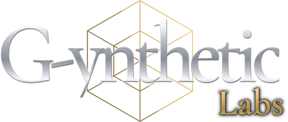

Tradesman-level structure
for AI.
G-ynthetic Labs is an independent research initiative bringing tradesman-level structural support to the field of AI, shipping with the tools to help maintain it.
AI can now do real work on its own. We build the structure that keeps it safe.
Usually nobody can see what an AI agent did, or why.
Typical AI agents
- Act without asking
- Forget earlier work
- Leave no clear record
Our agents
- Ask a person before anything important
- Remember what they did
- Record every step they try
Every product runs on the same safety system.
We call it the engine. A city practising for a flood and a two-person repair shop answering email get the same checks.
Make your own AI agent, without writing code.
Pick the job, add ready-made skills and set what it may do alone. Then manage it through n-HR™, our way of running AI agents the way HR runs staff.

- 01Pick a job
- 02Add skills
- 03Add tools
- 04Add your forms
- 05Set its limits
- 06Put it to work
Disaster drills on a copy of your own city.
Cities must practise for disasters, but drills are costly and hard to judge. City SeCUReD copies a city's public data as it is today, runs the disaster on a computer and records every decision.

Different jobs, one safety system.
Build-A-Bot
Make your own AI agent, no coding
Learn more →n-HR™
Manage AI agents the way HR manages staff
Learn more →City SeCUReD
Disaster drills on a copy of your city
Learn more →Position Agents
AI helpers for a city's emergency center
Learn more →Desk Agents
Email and paperwork help for small business
Learn more →The Engine
The safety system under every product
Learn more →Verifiable Inference
Prove an AI answer hasn't changed
Learn more →G-ynthetic Mind
A personal AI that remembers you
Learn more →CubeX
Chess played inside a cube
Learn more →Early, working, and honest about it.
We're a young company, funded by our founder and not yet earning revenue. Everything here runs today on test data.
City SeCUReD figures as of 18 Aug 2026: about 74,000 lines of code.
Build an AI agent you can check up on.
We're looking for early users, pilot partners and investors who want AI that answers to people.